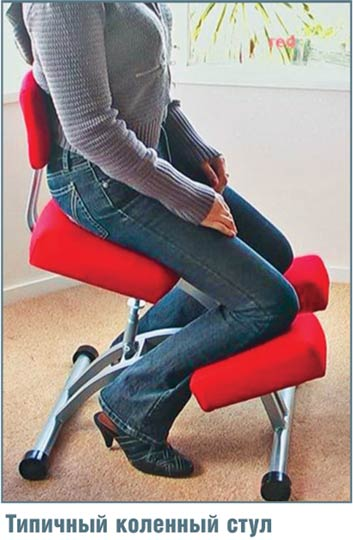
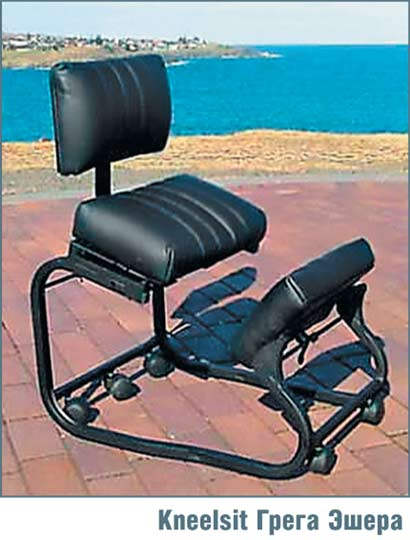
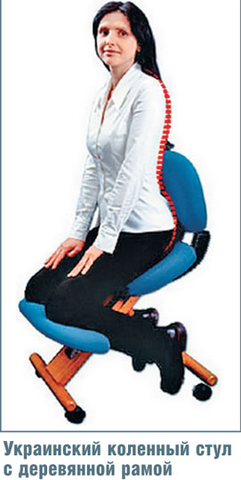
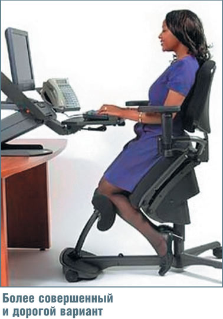
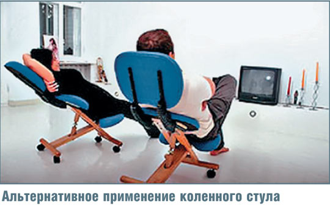
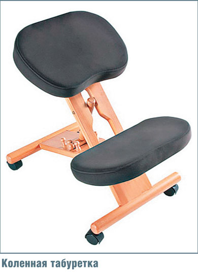
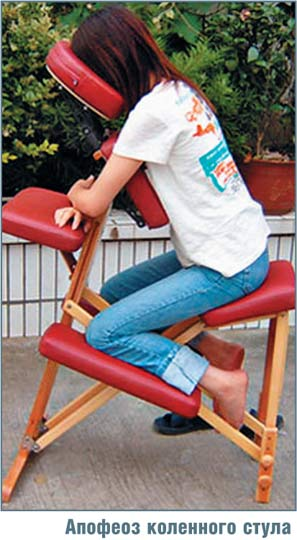

Сидеть человеку несвойственно. Тысячи лет люди в основном передвигались в поисках пищи, а остальное время отдыхали, возлежа на подстилке у очага. Сидячей позы в современном понимании не существовало, а во время медитаций использовали либо позу вирасана (встав на колени и затем присев на пятки), либо позу лотоса. На лошади тоже, строго говоря, не сидят — там скорее надо подпрыгивать в такт движениям скакуна, занимающиеся верховой ездой хорошо это знают.
По историческим данным, первый стул был изобретен в Древнем Египте и назывался он «сиденье со спинкой». В древнем Риме наличие стульев и кресел было признаком благосостояния, поэтому рабы всегда переносили их вслед за хозяином. Конструкция того стула мало отличалась от современной, разве что сделать сиденье мягким догадались не сразу. С тех пор дизайн стульев варьировался в широких пределах — их делали деревянными и мраморными, обивали сукном и кожей, украшали ножки и подлокотники фигурной резьбой, но основной принцип — L-образная конструкция с горизонтальным сиденьем и вертикальной спинкой — оставался неизменным.
Развитие промышленности в XX в. кардинально изменило человеческие привычки. Нормой стал монотонный ручной труд, при котором большую часть дня работник сидит за столом. Появление автомобилей и компьютеров еще больше усугубило эту тенденцию и привело к тому, что люди работают, едят, отдыхают и даже передвигаются в основном сидя. Наблюдение ученых показало, что за день сидящий человек меняет позу несколько тысяч раз! А все потому, что не удается найти удобное положение. Затекает спина, поясница, шея, немеют ноги, не говоря уж о ягодицах, на которые приходится основная нагрузка. Центр тяжести сидящего располагается впереди туловища, что вынуждает человека сутулиться. Неудобство — это еще полбеды, нарушение кровообращения в области малого таза приводит к заболеваниям внутренних органов, а неправильная осанка не идет на пользу позвоночнику.

Что же делать? Отказываться от благ цивилизации мы пока не готовы, а все попытки доработать классическую конструкцию стула — изогнутая спинка, подпружиненное сиденье и пр. — приносят только кажущееся облегчение. Попытки радикально изменить положение дел предпринимаются с середины прошлого века. Примерно в 1970 г. доктор Мендел (A.C. Mandal) из Дании заметил, что школьники часто сидят на занятиях, как бы немного сползая с сидений вперед. Вы и сами можете провести подобные наблюдения: долго сидящий на стуле человек либо откидывается на спинку, тем самым перераспределяя на нее часть нагрузки, либо сидит на краю стула, а его бедра принимают наклонное положение (как вариант — вперед наклоняется сам стул). Мендел попробовал сам использовать подобную позу и пришел к выводу, что сиденье следует наклонить вперед на угол около 15 градусов. Некоторое количество «эргономичных» стульев было изготовлено согласно его рекомендациям.
Однако товар не снискал особой популярности. С одной стороны, люди в то время были не сильно озабочены проблемами эргономики, а с другой — подобная поза, несмотря на очевидные достоинства, имела тот недостаток, что была неустойчивой: сидящему то и дело приходилось передвигаться выше, так как он постепенно сползал. Тем временем в Норвегии одновременно несколькими разработчиками, среди которых известный дизайнер мебели Питер Опсвик (Peter Opsvik), проводились аналогичные изыскания, результатом которых явилось появление на свет изделия под названием kneeling chair (в дословном переводе — «коленный стул»). В нем наклоненное вперед сиденье было дополнено упором для коленей, предотвращающим сползание. В 1975 г. на него был получен американский патент № 3863978.
На таком стуле вес сидящего распределялся между коленями и ягодицами, что снижало нагрузку на каждую часть тела в отдельности, а центр тяжести за счет подобной позы находился практически на линии позвоночника, благодаря чему позвоночник рефлекторно выпрямлялся. Пожалуй, такое положение чем-то напоминает верховую езду или, по-современному езду на мотоцикле. Сидя на таком стуле, человек меньше устает, меньше ерзает и в результате — продуктивнее работает!
Попытки создать идеальный стул проводил также австралийский психолог-исследователь Грег Эшер (Greg Usher), придумавший похожий вариант стула по аналогии с двуногой ритуальной табуреткой африканского племени масаи, обычаи которого он изучал во время поездки по Африке. В процессе медитации Грег обнаружил, что его суставы не настолько гибкие, чтобы свободно сидеть в позе лотоса. Тогда он попробовал медитировать, сидя на обычном стуле, но после нескольких часов такого сидения его тело затекло и начало болеть. Тогда-то он и обратил внимание на табуретку, на которой можно было сидеть, раскачиваясь взад и вперед (примерно как мы раскачиваемся на задних ножках обычного стула). Созданная им конструкция, названная kneelsit, несколько отличалась от kneeling chair другим построением рамы и отсутствием спинки, но по сути являлась его разновидностью.

С тех пор kneeling chair стал набирать популярность по всему миру. Однако происходило это медленно, отчасти из-за отсутствия рекламной кампании, но в основном из-за консервативности человеческого характера, который предпочитает пусть неудобные, но привычные предметы, особенно такие незыблемые, как стулья. Сейчас в Европе и Америке выпускается множество видов коленного стула — от табуретки (простейшая разновидность без спинки и подлокотников) до сложной металлической конструкции с кожаной обивкой, подлокотниками, спинкой и встроенным столиком для ноутбука (стоимость такого кресла около 1300 долл.). Однако у нас в России можно найти только «табуреточный» вариант, да и тот с большим трудом. Нет даже сложившегося названия этого предмета, встречающийся иногда термин «обратный стул» непопулярен и совершенно не отражает сути изделия. В соседней же Украине смогли наладить выпуск таких стульев, их там можно приобрести свободно.

Честно говоря, автор статьи тоже долгое время пребывал в плену здорового скептицизма, считая все рассуждения о пользе и удобстве новых стульев выдумкой маркетологов. Но в конце концов любопытство пересилило, и коленный стул «украинского разлива» был заказан и куплен. Это сравнительно недорогой вариант, выполненный в виде X-образной рамы с регулировочным винтом и наклонной спинкой. Первое впечатление, возникшее после часа сидения на новом стуле, — что-то не так! Анализируя свои ощущения, я понял что за прошедший час ни разу не возникло желания сменить позу. И это притом, что стул еще не был точно по- догнан по фигуре. Значит, идея работает!

После месяца активного использования новинки эйфория прошла и появились некоторые наблюдения и замечания. Да, стул и правда удобен настолько, насколько его расхваливают в рекламных проспектах. Сидеть на нем можно в двух позах: «для работы» (колени на подставке, ягодицы на сиденье, спина опирается на спинку) и «для отдыха» (ягодицы на подставке для коленей, спина опирается на сиденье, а голова на спинку, такое положение полулежа подходит, например, для просмотра телевизора). Наклон сиденья регулирует давление на колени: больше наклон — больше разгружается «пятая точка», меньше наклон — система превращается в классический стул. Сиденье не имеет возможности поворачиваться относительно основания, как в стандартном офисном стуле, но рама опирается на ролики, которые вращаются настолько легко, что не составляет никакого труда повернуть весь стул.

Форма стула требует подгонки под пропорции вашей фигуры, иначе вы будете ощущать дискомфорт в некоторых местах. Не поленитесь прислушаться к собственным ощущениями и понять, что и куда надо передвинуть или наклонить. Украинский стул в этом отношении не блещет богатством регулировок, их всего две: угол между половинами рамы, влияющий одновременно как на высоту посадки, так и на наклон сидений и спинки. И то и другое сделано не очень удачно: высота рамы регулируется вращением гайки, что занимает некоторое время — здесь больше бы подошел пружинный пневмоцилиндр, которым оснащается большинство современных офисных стульев. Некоторые зарубежные варианты коленного стула выполнены именно так. Высоту посадки и наклон сидений необходимо настраивать независимо друг от друга, поэтому в данной конструкции, где это не предусмотрено, под крепежные болты сиденья пришлось под-кладывать шайбы, чтобы добиться максимально равномерного распределения давления на бедра. Наклон спинки изменяется защелкой, которую легко случайно сдвинуть рукой, поэтому здесь тоже требуется доработка для увеличения силы прижима крепления. Деревянная рама вполне надежна, но рассчитана на вес тела лишь до 90 кг — «тяжеловесам» придется подыскивать более дорогие модели.

После описанных доработок стул стал настолько хорош, что сидеть на нем — истинное удовольствие! Ничто нигде не давит, не затекает, спина всегда прямая, но не напряжена. Провести пару часов, совершенно не отвлекаясь от работы, не составляет теперь проблемы. Однако следует учесть, что такая посадка несколько выше обычной и стол может оказаться низковат. Впрочем, это уже недостаток стола. Также не получается с разбегу плюхнуться на стул — приходится подходить к нему и аккуратно садиться. Если вам часто вставать — стул вам станет в этом помехой, что тоже можно отнести к его недостаткам. Но в этом случае сойдет привычная всем нам конструкция.

Если бы я стал приобретать такой стул сейчас, пожалуй, остановился бы на более дорогом зарубежном варианте — с металлической рамой, пневмоцилиндром и дюжиной регулировок. Для людей, чья фигура далека от средних пропорций, а навыков и/или желания заниматься доведением конструкции до ума нет — рекомендую обязательно посидеть на стуле перед покупкой, чтобы оценить, насколько данная модель удобна именно для вас. И не спрашивайте, как совместить этот совет с заказом товара из-за рубежа. Разве что наши Кулибины сподобятся и изготовят отечественный аналог, который можно будет протестировать в магазине. Но в принципе, и этот, «доработанный напильником» экземпляр превзошел все мои ожидания и настолько устраивает, что совершенно не хочется с ним расставаться. Уж и не знаю, на чем теперь сидеть в гостях — рабов для переноски стула у меня нет, а таскать самому, пожалуй, тяжеловато!